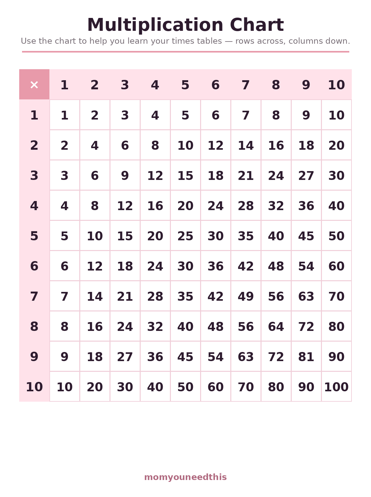
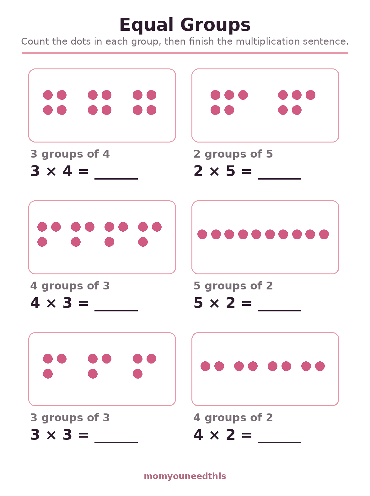
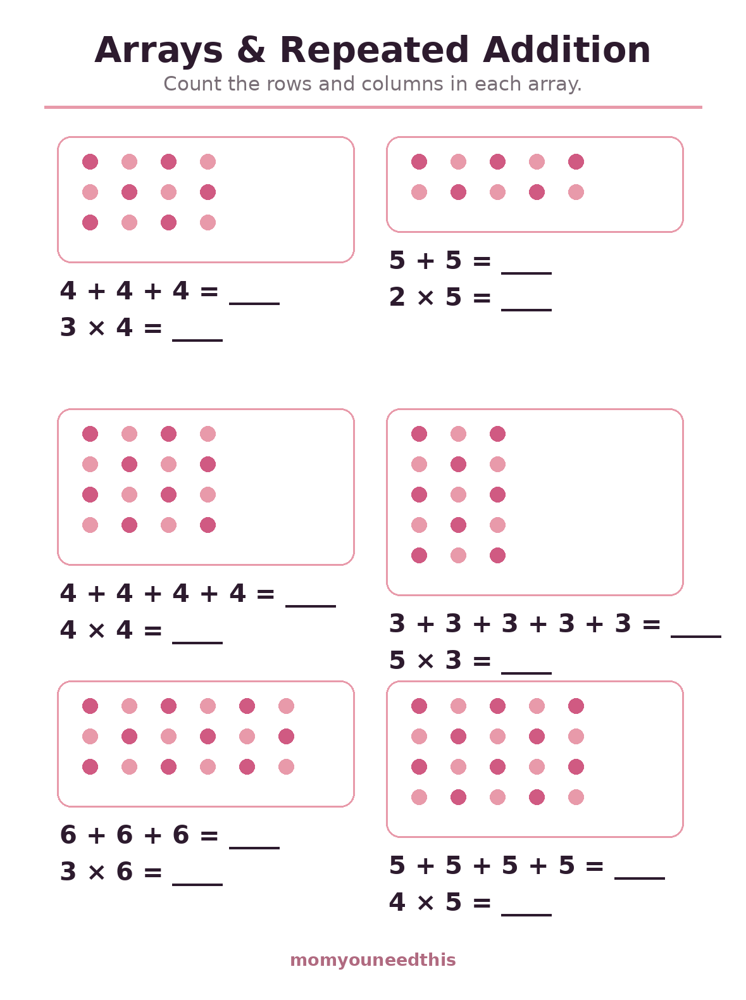
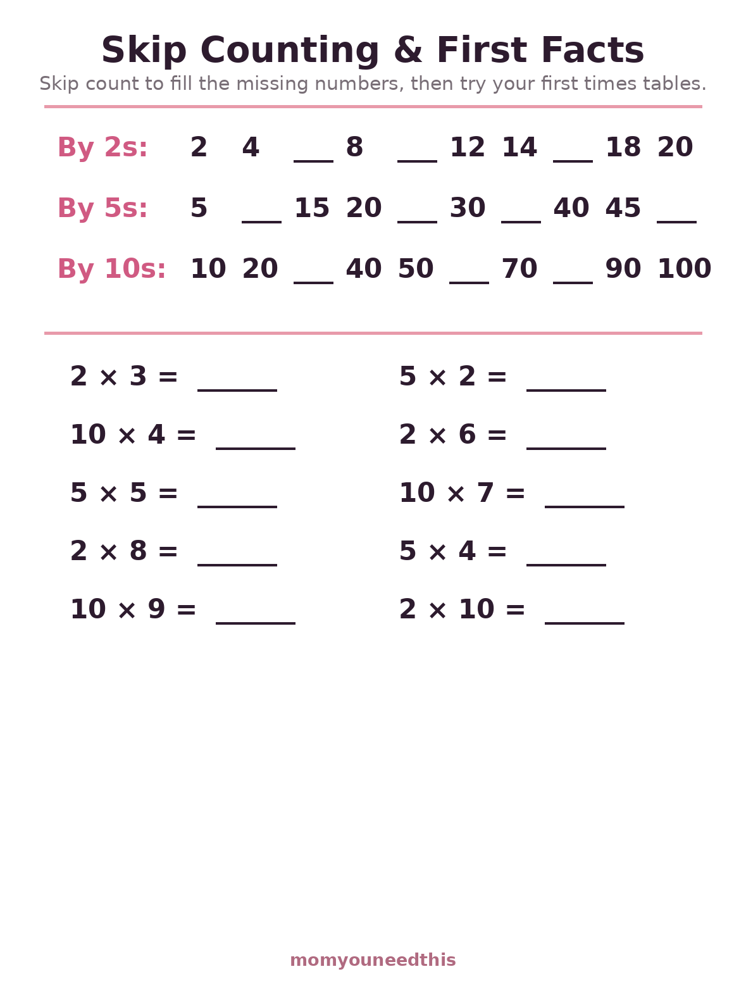

Early Multiplication Worksheets Equal Groups, Arrays, Skip Counting & a Printable Chart
Free early multiplication worksheets for ages 6 to 8 that start with the ideas, not the drilling: a printable multiplication chart, equal groups to count, arrays that turn into repeated addition, and skip counting by 2s, 5s and 10s with first facts. Print at home, no signup.
Last updated: October 21, 2026
Quick Answer
These free multiplication worksheets introduce times tables the way schools do: a printable 1–10 multiplication chart, an equal-groups sheet, an arrays and repeated-addition sheet, and a skip counting sheet covering the 2s, 5s and 10s with first facts. They suit ages 6 to 8 who add confidently and are ready for the next idea.
At a Glance
- Skill: Early multiplication — groups, arrays, skip counting
- Ages: 6–8 (grades 2–3)
- Sheets: 4 (chart + 3 worksheets)
- Tables covered: Ideas for all; facts for 2s, 5s, 10s
- Format: Dots, arrays and number patterns — no rote drills
- Cost: Free — print at home
🔢 The Multiplication Chart
Print the chart first and keep it where homework happens. It is a reference, not a test: your child looks up 4 × 6, finds the row and column, and sees 24 — and after enough lookups, the answer starts arriving before the search does. Patterns jump out too: the diagonal of squares, the 5s ending in 0 and 5.

🔢 Download Your Free Multiplication Chart
The full 1–10 chart — print it for the homework table or the bedroom wall.
⬇️ Download Free Chart 🖨️ Print🎁 Free printable for ages 5–7
👥 Equal Groups
Multiplication begins as a story: 3 plates with 4 cookies on each plate. This sheet draws that story in dots — your child counts the dots in each group, sees that the groups are equal, and finishes the sentence: 3 groups of 4 is 3 × 4. Six everyday situations, all countable by eye.

👥 Download Your Free Equal Groups Worksheet
6 equal-groups pictures to count, each with its multiplication sentence to finish.
⬇️ Download Free Worksheet 🖨️ Print🎁 Free printable for ages 5–7
🧮 Arrays & Repeated Addition
An array lines the groups up in rows and columns, and it reveals multiplication's best secret: 3 rows of 4 is the same adding as 4 + 4 + 4. Each array on this sheet asks for the repeated addition first and the multiplication second, so the two ways of seeing it stay connected.

🧮 Download Your Free Arrays Worksheet
6 dot arrays — write the repeated addition, then the multiplication it makes.
⬇️ Download Free Worksheet 🖨️ Print🎁 Free printable for ages 5–7
⏭️ Skip Counting & First Facts
Skip counting is the bridge to real facts: a child who can chant 5, 10, 15, 20 already knows the 5 times table in disguise. This sheet fills in missing numbers in the 2s, 5s and 10s sequences, then tries ten first facts drawn only from those three tables.

⏭️ Download Your Free Skip Counting Worksheet
Missing-number sequences for the 2s, 5s and 10s, plus 10 first facts to try.
⬇️ Download Free Worksheet 🖨️ Print🎁 Free printable for ages 5–7
🌱 Understanding Before Memorizing
A child who memorizes 6 × 7 = 42 without the group picture owns one fragile fact; a child who can build 6 groups of 7 with counters owns the whole table, because any forgotten fact can be rebuilt. That is why these sheets draw everything. Speed comes later, on its own, once the picture is secure — chanting and flashcards have their place after understanding, not before.
🖨️ How to Use These Worksheets
- Start with real objects. Grapes, buttons, toy cars — make 3 groups of 4 on the table before opening the equal groups sheet.
- Keep the chart visible. Looking answers up is learning, not cheating, at this stage. The looking is what builds the memory.
- One sheet per session. Groups, then arrays another day, then skip counting. Each idea deserves its own short sitting.
- Chant while moving. Skip counting on stairs, in the car, bouncing a ball — rhythm is a memory tool.
✖️ More Math for Moms & Kids
➕ Carrying & Borrowing
The two-digit addition and subtraction skills that sit under multiplication. Practice carrying.
📖 Math Word Problems
One-step stories with adding and taking away — multiplication stories come next. Try word problems.
🔢 Odd & Even Numbers
The number pattern hiding inside the 2 times table. Explore odd and even.
📝 Addition Worksheets
Plain addition practice with sums to 5, 10 and 20. Keep adding.
❓ Early Multiplication FAQ
What age should a child start multiplication?
Most children meet multiplication in grade 2 or 3, around ages 7 to 8, but the ideas can start earlier: equal groups, arrays and skip counting are gentle first steps a 6-year-old can enjoy. These sheets start with the ideas, not the memorizing.
What should my child learn before times tables?
Three things: that multiplication means equal groups (3 groups of 4), that an array shows it in rows and columns, and skip counting by 2s, 5s and 10s. A child who understands those can work out any early fact instead of guessing.
Is there a printable multiplication chart?
Yes — the first sheet on this page is a full 1-to-10 multiplication chart to print and keep beside homework. Children use it to check their work while the facts are still new, then gradually stop needing it.
Which times tables come first?
The 2s, 5s and 10s — they follow skip-counting patterns children already know from counting. The skip counting sheet on this page practices exactly those, with a first set of facts to try.
Are these multiplication worksheets free?
Yes — the chart and all three worksheets are free to print at home, with no signup and no email.